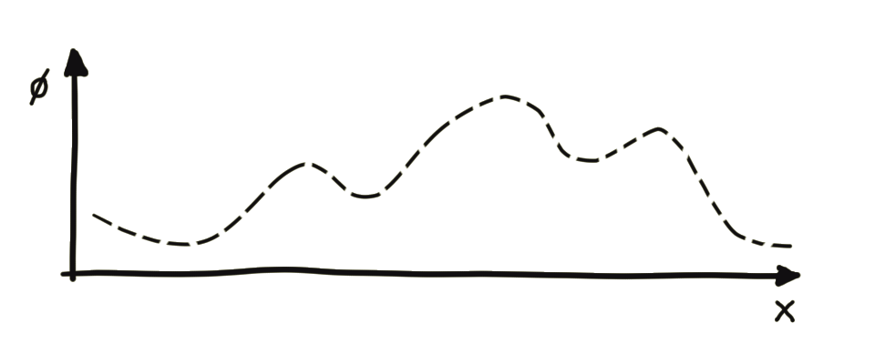

Ortsdiskretisierung mit der Finite-Differenz-Methode
Von den Grundgleichungen zum linearen Gleichungssystem
Ziel
Aufstellen eines linearen Gleichungssystems, dass mit numerischen Algorithmen gelöst werden konstant.
Zunächst
Stationäres Problem \(\rightarrow \pp{}{t} = 0\)
Vorgehensweise in der numerischen Strömungsmechanik
Technisches Problem
Modellierung
Mathematische Beschreibung
Diskretisierung
- Rechengitter
- Diskretisierung mit Finite-Differenzen
- Diskretisierung für 1. und 2. Ableitung
- Randbedingungen
- Form des linearen Gleichungssystems
Numerische Lösung
Visualisierung
Auswertung
Expertise, Experimente
Validierung der Ergebnisse
Diskretisierung
Allgemeine Hinweise
- Die mathematischen Gleichungen können in der Regel nicht analytisch gelöst werden
- Daher Anwendung von numerischer Strömungsmechanik
- Zur Anwendung numerischer Methoden ist eine diskrete Darstellung der Lösung erforderlich
- Die Lösung kann nicht an jeder Stelle des Rechengebiets berechnet werden
- Durch die diskrete Darstellung erhält man die Lösung in den diskreten Punkten
- Die diskreten Punkte sind durch das verwendete Rechengitter definiert, das für eine Strömungssimulation erstellt werden muss


Diskretisierung
Übliche Methoden und Anschauungsbeispiel

Übliche Diskretisierungsmethoden
- Finite-Differenzen-Methode
- Anschaulich
- In diesem Kapitel der Vorlesung behandelt
- Finite-Volumen-Methode
- Häufig für CFD-Anwendungen, z.B. OpenFOAM, ANSYS Fluent, …
- Finite-Element-Methode
- Unüblich für CFD-Anwendungen
- Nicht im Rahmen der Vorlesung behandelt
- Die Berechnung erfolgt basierend auf dem verwendeten Rechennetz
- Die Unbekannten werden entweder auf dem Schnittpunkt der Gitterlinien oder in der Zellmitte durchgeführt
Finite-Differenzen-Methode
Vorgehensweise
Erstellen des Rechengitters
- Orthogonales Netz
- Nicht äquidistant
Appproximation der Differentialquotienten durch Differenzenquotienten
- Genauigkeit der Approximation
\[ \pp{u}{x} = \dd{u}{x} + \text{Abbruchfehler} \approx \dd{u}{x} \]
Aufstellen des Linearen Gleichungssystems
- Berücksichtigung von Randbedingungen
\[ {\tiny \begin{bmatrix} \blacksquare & \blacksquare & 0 & \dots & \dots & \dots & 0\\ \blacksquare & \ddots & \ddots & 0 & & & \vdots\\ 0 & \ddots & \ddots & \ddots & 0 & & \vdots\\ \vdots & 0 & \blacksquare & \blacksquare & \blacksquare& 0 & \vdots\\ \vdots & & 0 & \ddots & \ddots& \ddots & 0\\ \vdots & & & 0 & \ddots& \ddots & \blacksquare\\ 0 & \dots & \dots & \dots & 0 & \blacksquare & \blacksquare\\ \end{bmatrix} \begin{bmatrix} \phi_1 \\ \vdots \\ \phi_m \\ \vdots \\ \phi_N \\ \end{bmatrix} = \begin{bmatrix} 0 \\ \vdots \\ 0 \\ \vdots \\ 0 \\ \end{bmatrix} \mathrm{mit} \; \blacksquare \; \mathrm{für\ Einträge} \neq 0 } \]
Lösung
\[ \vec{\phi}^{(n+1)} = f(\phi^{(n)}) \]
Finite-Differenzen-Methode
Erstellen des Rechengitters (1/4)
Beispiel: Betrachtung eines ein- und zweidimensionalen Berechnungsgebiets mit \(N\) und \(N \times M\) Knoten

Note
Im Allgemeinen muss das Gitter strukturiert und rechtwinklig (kartesisch) sein.
Finite-Differenzen-Methode
Appproximation der Differentialquotienten durch Differenzenquotienten (2/4)
- Je nachdem welche Differentialgleichung gelöst wird, werden meist für eine Unbekannte \(\phi\) die Ableitungen \(\pp{\phi}{x}\), \(\pp{^2 \phi}{x^2}\) und \(\pp{\phi}{t}\) benötigt.
- Orts- und Zeitableitung werden prinzipiell durch das gleiche Schema abgeleitet
Beispiel: Graphische Approximation für \(\pp{\phi}{x}\) an der Stelle \(x=x_i\)
\(\ppb{\phi(x_i)}{x} = \at{\pp{\phi}{x}}{x=x_i} = \at{\pp{\phi}{x}}{i} \approx \at{\dd{\phi}{x}}{i} = \frac{\phi(x_i + \Delta x) - \phi(x_i)}{(x_i + \Delta x) - (x_i)} = \fd{\phi}{i+1}{i}{\Delta x}\)
\(\ppb{\phi(x_i)}{x} = \at{\pp{\phi}{x}}{x=x_i} = \at{\pp{\phi}{x}}{i} \approx \at{\dd{\phi}{x}}{i} = \frac{\phi(x_i) - \phi(x_i - \Delta x)}{(x_i) - (x_i - \Delta x)} = \fd{\phi}{i}{i-1}{\Delta x}\)
\(\ppb{\phi(x_i)}{x} = \at{\pp{\phi}{x}}{x=x_i} = \at{\pp{\phi}{x}}{i} \approx \at{\dd{\phi}{x}}{i} = \frac{\phi(x_i + \Delta x) - \phi(x_i - \Delta x)}{(x_i + \Delta x) - (x_i - \Delta x)} = \fd{\phi}{i+1}{i-1}{2\Delta x}\)
\(\ppndb{\phi(x_i)}{x} = \at{\ppnd{\phi}{x}}{x=x_i} = \at{\ppnd{\phi}{x}}{i} = \at{\pp{}{x} \left( \pp{\phi}{x} \right)}{i} \approx \at{\ddb{\pp{\phi}{x}}{x}}{i} = \frac{1}{\Delta x}\left( \fd{\phi}{i+1}{i}{\Delta x} - \fd{\phi}{i}{i-1}{\Delta x} \right)\)